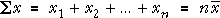
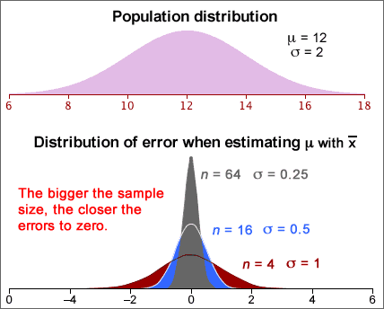
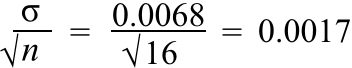
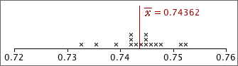

If you don't want to print now,
Sampling mechanism
The mechanism of sampling from a population explains randomness in data.
In practice, we must use a single sample to find information about the population.

Parameters and statistics
We usually focus attention on a small number of numerical characteristics.

Variability of sample statistics
The variability in random samples also implies sample-to-sample variability in sample statistics.

Distribution of the sample mean
The mean of a random sample of n values is a random quantity. Its distribution is centred on the population mean but its spread is lower then that of the population distribution.
Centre and spread of the sample mean's distribution
We can be more precise. If the population has mean µ and standard deviation σ, then the mean of a sample of n values,  ,
has a distribution with mean and standard deviation:
,
has a distribution with mean and standard deviation:
 = μ
= μ
 =
= 
Shape of the mean's distribution
Whatever the shape of the population distribution,
 = μ
= μ  =
= 
However skewness in the population distribution leads to some skewness in the distribution of the mean.
Samples from normal populations
When the population distribution is normal, the sample mean also has a normal distribution.
 ~ normal (μ ,
~ normal (μ ,  )
)

Means from non-normal populations
Irrespective of the shape of the population distribution,
 = μ
= μ  =
= 
If the population is not a normal distribution, the sample mean does not have a normal distribution. However the Central Limit Theorem states that...
For most non-normal population distributions, the distribution of the sample mean becomes close to normal when the sample size increases.

Sample mean and sum
The mean of a random
sample,  ,
has a distribution that is approximately normal if the sample size, n, is
large and alway has a
mean and standard deviation that depend on the population mean, µ, and standard deviation,
σ,
,
has a distribution that is approximately normal if the sample size, n, is
large and alway has a
mean and standard deviation that depend on the population mean, µ, and standard deviation,
σ,
 = μ
= μ
 =
= 
Occasionally the sum of values in a random sample values is more useful than the mean,

Its distribution is a scaled version of the distribution of the mean — the same shape but different mean and standard deviation.


Mean vs Sum
As the sample size increases,

Exercises are only available online.
Exercises are only available online.
Exercises are only available online.
Exercises are only available online.
Distribution of the sample mean
A population mean, µ, is usually estimated by the mean from a random sample.

If the population standard deviation is σ,  has a distribution with
has a distribution with
 = μ
= μ
 =
= 
and is approximately normal if the population is normal or n is reasonably large.
Distribution of the estimation error
Since the error in the estimate is simply the sample mean minus a constant (µ), its distribution has the same shape but is centred on zero,
error =  − µ ~ normal (0,
− µ ~ normal (0,
 )
)

Standard error and bias
When the sample mean is used to estimate a population mean, µ, the estimator is unbiased.
error = μerror = 0
The estimator's standard error is the standard deviation of the error distribution,
standard error = σerror = 
Note that the error distribution does not depend on the value of µ. We can therefore evaluate the standard error provided the value of σ is known.
Example
We know that a particular type of measurement, X, has a normal distribution with known standard deviation σ = 0.0068 but unknown mean µ. A random sample of n = 16 values has sample mean 0.0724 and this is used to estimate µ . We can then find the distribution of errors that will arise using:
error ~ normal (0, σ =  )
)
For sample size n = 16, this error distribution is:

Interpreting the standard error
The 70-95-100 rule-of-thumb provides a useful interpretation of the standard error of an estimator.
There is approx 95% probability that the error is within 2SE of zero and it is almost certainly within 3SE of zero.
Note that the term standard error is often abbreviated to SE.
Example
A random sample of n values is taken from a population with distribution,
X ~ normal (μ , σ = 0.0068)
giving a sample mean that is 0.0724. This is our estimate of µ. The standard error of this estimate is
standard error = SE = 
The error in our estimate has about 95% chance of being within 2SE = 0.0034 of µ and is almost certain to be within 3SE = 0.0051 of it.
Difference between standard error and standard deviation
The standard deviation of a sample mean is closely related to the population's standard deviation:
 =
= 
For example,

There is a similar relationship between the standard deviation of a sample and the standard error of the mean. Do not confuse them:

Common mistakes in interpretation
Warning
Be particularly careful when reading journal articles. Some papers use standard deviations (SD) to describe the distribution of variables, but others give the standard errors (SE) of the means of the variables.
Exercises are only available online.
Exercises are only available online.
Exercises are only available online.
95% bounds on the error
If we know the error distribution of an estimator (or an approximation to it), we can find a range of values within which the error will lie with probability 0.95,

Expressed in an equation,
Prob ( -e* < error < e* ) = 0.95
95% confidence interval
Since the error is the difference between the estimator and the unknown parameter, this can be rewritten as:
Prob ( estimate - e* < parameter < estimate + e* ) = 0.95
The interval
estimate - e* to estimate + e*
is called a 95% confidence interval and we have 95% confidence that it will include the unknown parameter value.
Confidence interval from standard error
The 70-95-100 rule of thumb states that about 95% of values in most distributions are within 2 standard deviations of the mean. For unbiased estimators (with zero mean), we therefore have the approximation:

This leads to the approximate 95% confidence interval
estimate - 2 s.e. to estimate + 2 s.e.
Since the standard error of most commonly used estimators can be readily found by either a formula or statistical software, a 95% confidence interval can be easily found for most estimators.
Refinements
If we can only find an approximation to the error distribution, the method above would only give an approximate 95% confidence interval. The '± 2 s.e.' approximation is a useful guide in most circumstances, but we will refine this type of confidence interval for some estimators to make the confidence level closer to 95%.
Estimating a population mean
We first examine how to estimate the mean, µ, of a population when the population standard deviation, σ, is a known value. (In practice, σ is usually unknown, but we leave this until later in this section.)
The sample mean,  , is approximately normal, with
, is approximately normal, with
 = μ
= μ
 =
= 
When  is used to estimate µ, the error is approximately
is used to estimate µ, the error is approximately
error =  − µ ~ normal (0,
− µ ~ normal (0,  )
)
so the standard error of  is
is  .
.
95% bounds for the error
Applying the 70-95-100 rule of thumb to the error distribution,
Prob( error is between ± 2 ) is approximately 0.95
) is approximately 0.95
This can be refined using the properties of the normal distribution to get an exact probability of 0.95.
Prob( error is between ± 1.96 ) = 0.95
) = 0.95
95% confidence interval
Since  will be within 1.96
will be within 1.96  of µ
with probability 0.95, we are 95% confident that µ
is in the interval
of µ
with probability 0.95, we are 95% confident that µ
is in the interval

This is a 95% confidence interval for µ and the interval has a confidence level of 0.95.
Example
Consider a type of measurement that is normally distributed with known σ but unknown mean, µ:
X ~ normal (μ , σ = 0.0068)
The mean of a random sample of n = 16 values will therefore be normally distributed with standard error
 = 0.0068 / 4 = 0.0017
= 0.0068 / 4 = 0.0017
From this, we can obtain bounds on the error:

P(-0.00333 < error < 0.00333) = 0.95
If the sample data are:

then a 95% confidence interval for µ would be
0.74362 ± 0.00333 = 0.74029 to 0.74695
We are 95% confident that µ is between 0.74029 and 0.74695.
Interpretation of a confidence interval
95% confidence intervals are found from sample data and are therefore random, so they do not always include the parameter that is being estimated.
The diagram below is based on a simulation of random samples of n = 20 values from a normal population. The 95% confidence intervals for µ were calculated using the known population standard deviation, σ = 2.

A few random samples resulted in CIs that did not include µ = 12 (the population mean used to generate the simulated samples). If we had continued the simulation with more samples, eventually 95% of the CIs would have included the true parameter value.
In practice, we only have a single sample, and we do not know whether or not it is one of the 'lucky 95%' whose confidence intervals include µ, but we are 95% confident that it is.
Knowing that confidence intervals obtained in this way will usually include it is very helpful. In practice,...
Being right most of the time is the best one can hope for, since there is always the possibility of being misled by an unlucky sample.
Exercises are only available online.
Exercises are only available online.
Exercises are only available online.